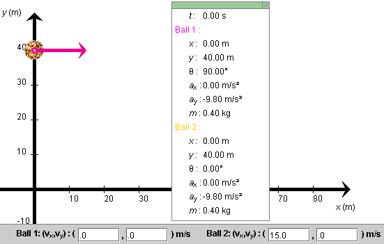
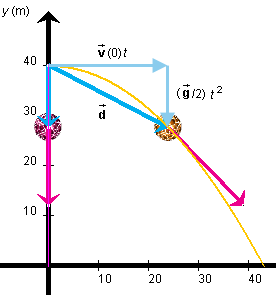
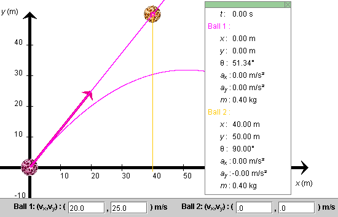
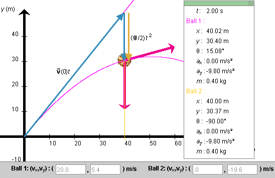
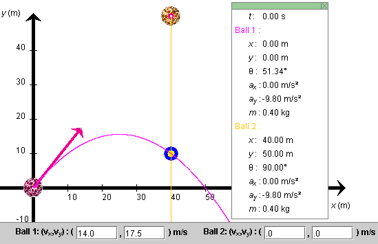

Prerequisites
Students should be familiar with the concepts of velocity and acceleration, at the vector level, and have a working knowledge of the kinematical equations for motion with constant acceleration in one and two dimensions.
Learning Outcomes
Students will learn that, in the absence of air resistance, projectile motion of an object can be described as a superposition of two motions: a motion with constant velocity equal to the object's initial velocity and a uniformly accelerated motion starting from rest with acceleration due to gravity. They will learn to use this understanding to make calculations on projectile motion and will get practice in working with the kinematical equations of motion with constant acceleration, in one and two dimensions.
Instructions
Students should know how the applet functions, as described in Help and ShowMe.
The applet should be open. The step-by-step instructions in the following text are to be done in the applet. You may need to toggle back and forth between instructions and applet if your screen space is limited.
 The Effect of Horizontal
Velocity on Time of Fall
The Effect of Horizontal
Velocity on Time of Fall
 Appendix
Appendix
 Equations For Motion
With Constant Acceleration
Equations For Motion
With Constant Acceleration
Question 1. Suppose Ball 1 (red) is dropped from an elevated position from rest and Ball 2 (orange) is thrown horizontally from the same level as Ball 1. Which ball will hit the ground (x-axis) first if air resistance is negligible?
Answer. One might be tempted to say that Ball 1 would reach the ground first because it is starting to move down right away while Ball 2 is starting out horizontally. Let's first investigate this "experimentally" with the applet. Then in Point 2 let's confirm the observations by calculations.
RESET the applet.
Set the positions and velocities of the two balls to
(x,y)1 =
(x,y)2 = (0, 40.0) m.  (1a)
(1a)
(vx ,vy)1 =
(0, 0) m/s,  (vx
,vy)2 = (15.0, 0) m/s,
(vx
,vy)2 = (15.0, 0) m/s,
 (1b)
(1b)
The applet will display a configuration as in Figure 1 below.

Figure 1
PLAY the motion, and observe which ball reaches the x-axis first. Display the balls' paths if you like.
Does it look like both balls reach the x-axis at the same time? Confirm this by stepping through the motion and measuring the times required for each ball to reach the x-axis. Also observe their vertical (y) components of velocity when the balls reach the x-axis.
Answer. At t = 2.85 s, both balls are at y = 0.16 m with the same velocity component vy = -27.9 m/s. At t = 2.86 s both balls are at y = -0.12 m, which is below the x-axis, and have the velocity component vy = -28.0 m/s. Interpolating between the two times gives approximately for the moment when both balls reach the x-axis:
t = 2.856 s,  y = 0,
y = 0,  vy =
-27.96 m/s.
vy =
-27.96 m/s.  (2)
(2)
Comment. The two balls reach the x-axis at the same time and with the same y-component of velocity! Thus, their vertical motions are identical. You can confirm this by observing the values of y and vy at in-between time points. They will always be the same for the two balls. Of course, the horizontal (x) components of velocity of the two balls are different. That of Ball 2 is equal to 15 m/s throughout while that of Ball 1 is 0. The motion of Ball 2 can be characterized as follows.
Ball 2 moves as if it carried out two motions at the same time: a horizontal motion with constant velocity(0) and a vertical motion of free fall identical to that of Ball 1, which is dropped from rest. The horizontal and vertical motions are independent of each other. Modifying the horizontal velocity does not affect the vertical motion.
This is illustrated in Figure 2 below. The net displacement
 of Ball 2 in
going from the start of the motion to the position shown in
Figure 2 is the vector sum of the ball's horizontal
displacement (0) t and vertical displacement (
of Ball 2 in
going from the start of the motion to the position shown in
Figure 2 is the vector sum of the ball's horizontal
displacement (0) t and vertical displacement ( /2)
t2. These two displacements are progressing
simultaneously as Ball 2 is moving along the orange
trajectory.
/2)
t2. These two displacements are progressing
simultaneously as Ball 2 is moving along the orange
trajectory.
As the linear and quadratic time dependencies of these
displacements indicate, the horizontal displacement proceeds
with constant velocity equal to (0) and the vertical displacement
with constant acceleration equal to .

Figure 2
Exercise 1. Repeat the measurements above with a horizontal velocity for Ball 2 different from 15 m/s. Do the results come out the same?
Exercise 2. Repeat Exercise 1 with air resistance. Take C = 0.002 kg/m, and the mass of Ball 2 equal to 0.1 kg. Observe the times it takes Ball 2 to reach the x-axis.
You should be able to observe that the times are different for different horizontal velocities. This demonstrates that when there is air resistance, the horizontal motion does affect the vertical motion. Thus, the assumption of no air resistance is critical for the indented statement above to be true.
Question 2. How do you calculate the time required for Ball 2 to reach the x-axis when there is no air resistance?
Answer. Without the knowledge gained above, this might seem like a difficult two-dimensional problem. However, knowing that the vertical motion of Ball 2 is just like that of Ball 1 reduces this to a straight-forward one-dimensional problem for a motion with constant acceleration.
The equations in the Appendix Equations For Motion With Constant Acceleration will provide the answers. Since the acceleration of Ball 1, due to gravity, is downward and the velocity of Ball 1 here is always downward as well, we can make our lives simpler by choosing the direction of the y-axis to be downward in the calculation, thus using a direction opposite to that used by the applet and shown in Figure 1.
Further, since all quantities are going to be positive, let's use magnitudes in place of components for the calculation. Thus, instead of vy and ay, we'll use v and a, respectively. Also,
v(0) = 0,  a = g = 9.8 m/s2.
a = g = 9.8 m/s2.
 (3)
(3)
With these values, the equation for y(t) in Table 1 of the Appendix gives
Δy = 40 m = (9.8/2)
t2,  (4)
(4)
whence
t =  (40/4.9) = 2.857 s,
(40/4.9) = 2.857 s,  (5)
(5)
and the equation for vy(t) = v(t) in Table 1 gives
v(2.857) = 9.8x2.857 = 28.0 m/s.  (6)
(6)
Results (5) and (6) confirm values (2), within round-off error.

Question 1. Position Ball 1 at the origin and Ball 2 at
(x, y)2 = (40.0, 50.0) m .
 (7)
(7)
Adjust the initial velocity of Ball 1 so that Ball 1 is "aimed" at Ball 2. This is the case if the initial velocity components of Ball are in the same ratio as the corresponding coordinates of the position of Ball 2, i.e., if vx/vy = 40/50. This is the case for the following choice of initial velocity of Ball 1:
(vx, vy)1 =
(20.0, 25.0) m/s.  (8)
(8)
Figure 3 below illustrates the initial conditions (7) and (8).

Figure 3
You can test that the initial velocity (8) is aimed straight at Ball 2 by setting the magnitude g of the acceleration due to gravity equal to 0 and PLAYing the motion. Ball 1 will move along the straight red line shown in Figure 3 that goes through Ball 2.
If both balls move without air resistance and if g = 9.8 m/s2, will Ball 1 hit Ball 2 or will they miss each other?
Answer. Try to find the answer "experimentally" with the applet. (In Question 2 below, the question will be answered theoretically.) Make sure that the drag coefficient C of Ball 2 is set to zero in the following experiments.
Make sure that g is set to 9.8 m/s2.
You may be tempted to think that, with g not equal to zero, velocity (8) will not lead to a collision between the balls, because Ball 2 will move away from the spot towards which Ball 1 is aimed. However, you should find that the balls will in fact collide. They will collide at the point where the curved red and the vertical yellow trajectories in Figure 3 intersect.
Exercise 1. Change the initial velocity of Ball 1 to another one that differs from velocity (8) in magnitude only. To be aiming directly at Ball 2, the ratio of initial velocity components vx/vy must equal 40/50 = 4/5. You should find that the balls will collide whatever the magnitude of the initial velocity of Ball 1, as long as this velocity is aimed at Ball 2.
Question 2. Why does the initial conditions illustrated in Figure 3 lead to a collision between the two balls?
Answer. The answer is contained in the equations for
projectile motion listed in the Appendix on Equations For Motion With Constant
Acceleration. We need Equation (A4). Setting  = in that equation gives
the equation for the displacement of an object performing
projectile motion:
= in that equation gives
the equation for the displacement of an object performing
projectile motion:
(t) =
(0)t +
(/2)
t2.  (9)
(9)
This equation says that the displacement at time tis
the sum of two terms, (0)t and (/2) t2. In
words, this equation amounts to the following Principle
of Projectile Motion. (This name is not in general
use, but let's use it here when referring to the following
statement.)
Principle of Projectile Motion. The projectile motion of an object subject to no air resistance is a superposition of two motions: a motion with a constant velocity equal to the object's initial velocity and a motion with constant acceleration
Comment 1. The time instant referred to in "initial
velocity" and "starting from rest" in this statement is the
time instant t = 0 in Eq.(9). For a given projectile
motion, any time instant can be chosen to be the initial one.
Eq.(9) will always apply, but the initial velocity
(0) will
have different values if the time t = 0 refers to
different instants.
Comment 2. The term "projectile motion" applies to the motion of an object in a uniform gravitational field. Such a field exists to a very good approximation within a region of space extending a few kilometers horizontally and vertically from a given point on the earth's surface. Motions extending over a larger range, in which the earth's curvature and the decrease of the value of g with elevation become significant, are called "ballistic motions".
Comment 3. The Principle of Projectile Motion is equivalent to the following description of projectile motion. Sometimes one, sometimes the other may be more useful.
The projections of projectile motion onto the horizontal and vertical axes - imagine them performed by two shadow balls - are motions with constant velocity and constant acceleration, respectively. The acceleration of the shadow ball moving on the vertical axis is downward and, on earth, has magnitude g = 9.8 m/s2.
What does the Principle of Projectile Motion imply when Ball 1 has its initial velocity aimed at Ball 2 as in Figure 3? The implication is illustrated in Figure 4 below.

Figure 4
Suppose an amount of time t elapses until Ball 1
reaches the straight-down trajectory of Ball 2. During this
time interval, Ball 1 undergoes the straight-line
constant-velocity displacement (0)t that if it existed by
itself would take the ball to the starting point of Ball 2.
In addition, simultaneously with the straight-line
displacement, there is the straight-down free-fall
displacement (/2) t2.
This combimation of two displacements takes Ball 1 exactly to
where Ball 2 is at time t, because Ball 2 also has
undergone a downward displacement of (/2) t2
during this time interval. The two simultaneous
displacements of Ball 1 are shown in blue and the downward
displacement of Ball 2 is shown in mustard color in Figure
4. This completes the explanation.
Question 3. How much time elapses until the two balls collide?
Answer. The Principle of Projectile Motion is again
the key to the answer. Of the two motions contributing to the
projectile motion of Ball 1, only the motion with the
constant velocity (0) has a non-zero x-component that will move
the ball towards the vertical fall line of Ball 2. Since
vx = 20.0 m/s and since Ball 1 has to make
a horizontal displacement Δx = 40.0 m to reach the vertical
trajectory of Ball 2, the amount of time t required is
t = Δx/vx = 40.0/20.0 =
2.00 s .  (10)
(10)
This agrees with the time elapsed that is displayed by the applet as shown in Figure 4.
Question 4. Set a target at (x, y) = (40.0, 10.0) m on the vertical trajectory of Ball 2. The position of the target is illustrated in Figure 5 below. What initial velocity must Ball 1 have in order to collide with Ball 2 at this target? You may want to try a few velocities with the applet. In what direction should the initial velocity of Ball 1 be?
Answer. The direction of the initial velocity of Ball 1 should be aimed at Ball 2, just like in Questions 1 and 2 and for the same reason.
To find the magnitude of the initial velocity, or the x and y components of the initial velocity, let's first determine how much time it takes for Ball 2 to fall down to the target.
This problem is identical to the problem that had to be solved in connection with Question 2 of the previous section "The Effect Of Horizontal Velocity On Time Of Fall". Even the magnitude of the vertical displacement is the same here as there, namely, 40 m (from 50 m down to 10 m). Thus the time required for both balls to reach the target is given by result (5)
t = 2.857 s .  (11)
(11)
Ball 1 is moving with constant horizontal velocity vx(0). In order for the ball to make a horizontal displacement Δx = 40 m in a time t = 2.857 s, vx(0) must be equal to
vx(0) = Δx/t = 40/2.857 = 14.0 m/s .
 (12)
(12)
It was pointed out earlier, that if Ball 1 is to be aimed at Ball 2 initially, the ratio vx(0)/vy(0) of the initial velocity components of Ball 1 must be 4/5 or vy(0)/vx(0) = 5/4. Thus,
vy(0) = (5/4)vx(0) =
(5/4)x14.0 = 17.5 m/s .  (13)
(13)
Eqs.(12) and (13) give the initial velocity of Ball 1 for the two balls to collide at the target.
Let's verify this by means of the applet. REWIND the applet, set the initial velocity of Ball 1 to values (12) and (13) and STEP the motion forward to t = 2.80 s. Ball 1 should be very close to Ball 2. Now reduce the time step to a size of 0.01 s, and step forward to t = 2.85 s. Ball 1 should be at x = 39.91 m, and the balls should be almost totally overlapping. Both balls have elevation y = 10.05 m. Move forward one more step to t = 2.86 s. Ball 1 will have overshot its mark slightly and be at x = 40.05 m. Both balls will have elevation y = 9.95 m. Thus, the time required is indeed somewhere in between 2.85 s and 2.86 s, as predicted by the calculated value (11). Figure 5 below shows the initial positions and velocities of both balls and the trajectories of the two balls intersecting the target.

Figure 5
>>>>> Appendix <<<<<


Figure A1
Axes and Components. In the following equations for the motion of a particle with constant acceleration it is assumed that an x,y coordinate system has been chosen and that the particle has the same acceleration everywhere, with constant x and y components ax and ay.
Sign Changes. In the diagram in Figure A1 above, the direction of the acceleration vector is such that both the x and y components of the vector are positive. In another situation, the direction of the vector may be different, so that one or both of the x and y components may be negative. (Or the direction of the vector may be as shown, but the directions of the x and y axes may have been chosen differently, again causing one or both components of the vector to be negative.) The equations below apply to all such situations. No signs in these equations need to be changed.
2D vs. 1D. The following equations are formulated for the 2D case, motion in two dimensions. However, they also apply to 1D motion, motion along a straight line. In this case, it will often be convenient to choose either the x or y axis to be along the line of motion. Assuming the motion is along the x axis, you will need only the equations for the x components. All y components in any of the equations will be zero. Similarly, if the motion is restricted to the y-axis, just use the y equations and ignore the x equations.
Acceleration, Velocity, and Position vs. Time:
| x components | y components | |
| Acceleration | ax = const | ay = const |
| Velocity | vx(t) = vx(0) + axt | vy(t) = vy(0) + ayt |
| Position | x(t) = x(0) + vx(0)t + (ax/2)t2 | y(t) = y(0) + vy(0)t + (ay/2) t2 |
Table 1
In vector notation, the equations for the x and y components of velocity can be combined into a single equation,
(t) =
(0) +
t.
 (A1)
(A1)
Similarly, the equations for the x and y position coordinates can be combined into one vector equation,
 (t) =
(0) +
(0)t
+ (/2)
t2.
(t) =
(0) +
(0)t
+ (/2)
t2.  (A2)
(A2)
Here, denotes
the position vector whose components are (x,
y).
Introducing the displacement vector (t) from the start of the
motion at time t = 0 to time t which is equal
to the change in the position vector,
(t) =
(t) -
(0),
 (A3)
(A3)
Equation (A2) can be rewritten as
(t) =
(0)t +
(/2) t2.
 (A4)
(A4)
Speed vs. Displacement:
Δv2 =
v2(t) - v2(0) =
2axΔx +
2ayΔy
For 1D motion, say, along the x axis, the speed vs. displacement relation reduces to
Δv2 =
v2(t) - v2(0) =
2axΔx =
2ax[x(t) - x(0)] .
 (A7)
(A7)